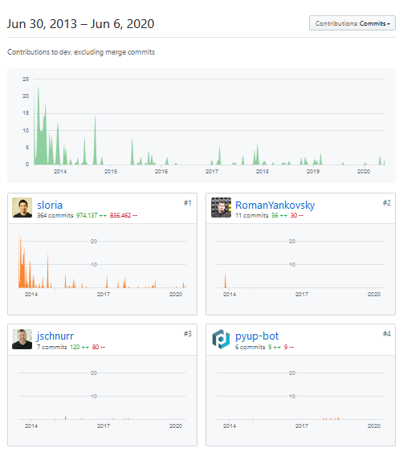
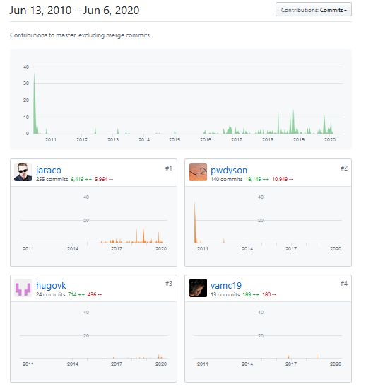
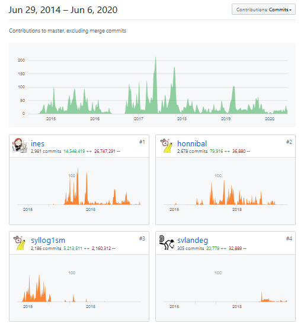

Heuristics for Active Open Source Project
When evaluating whether to use an open source project I generally want to know how active the project is. A project doesn’t need to be active to be usable; mature and stable projects don’t need to change much to be reliable. But if a project has problems or missing essential features, or is in an evolving ecosystem (like any web project or kernel drivers), it’s important to know how fast it changes. The easiest heuristic is to look at how much activity there has been on the repository over time, and this is really easy on Github’s contributors tab.
For example I was recently looking at TextBlob for making plural words singular. It doesn’t work on already singular words; for example “gas”, “bus” or “analysis” have their final “s” removed, although this is not documented. Here’s the Contributors graphs from the insights pane of Github;

Almost all the contributions have been made by a single person, and there are not many commits in the last 12 months. It’s unlikely this will get fixed by itself. Searching the issues (both open and closed) shows this problem is an open issue with no responses. Looking at the open pull requests there are a few reasonable looking requests that have no comments. From the closed pull requests the primary author has been doing basic maintenance work but no enhancements. If I submitted a change for this complex task there’s a low chance it would be included into the library.
None of this is a criticism of TextBlob or its author. I’m just pragmatically assessing what my experience will be like if I adopt this library in my code base or try to contribute to it. It is a very useful library and will continue functioning, but is unlikely to change substantially and I will need to take it as it is. Maintaining an open source project is an extremely time consuming and thankless task, and the sole maintainer probably has other priorities. Rich Hickey’s Open Source is Not About You talks about what it can be like running a popular open source project.
TextBlob’s singular is based on the inflect library’s singularize_noun function, which is documented to only work on singular nouns. There’s an open issue about it, but as in the thread it is working as documented. Unlike TextBlob which is a general purpose tool, inflect is a very focused library that just doe one thing, inflect English words. As such it wouldn’t need much maintenance to be useful once it is stable, since English doesn’t change much.

Inflect only one primary contributor, but they are making regular contributions, responding to issues and pull requests and the scope of the project is rather small. People are adding new grammatical exceptions. This seems like a good library to rely on or contribute to.
For a different example look at SpaCy. This is part of explosion.ai which provide SpaCy as an open source package of easy to use NLP tools, and monetise on the annotation tool prodigy which has great contribution. Because of this they have more significant resources and have 3 people very actively contributing to it.

NLTK provides a very broad range of NLP tools. It’s supported through an academic community, but it has two very active contributors and keeps growing. I would definitely build applications on NLTK.

These are just heuristics, that while useful have to be taken with a grain of salt. A project that changes too quickly, especially changing the API, can be a burden to integrate and upgrade. An extremely mature and bug free project like TeX is almost completely unchanging, but it is so stable you can easily build on it, which ConTeXt and LaTeX did.
I also wouldn’t rely too much on them because they are easily rigged. For example someone tried to take over PhantomJS by making spurious commits like adding and removing the same file, reformatting. There’s also the h-index and other author level metrics in academia that encourage people to reference their own papers, or actively build communities that cross-reference each other, just to raise their academic standing.
However for quickly getting an idea for how fast a project is moving and responding to change, before doing a more thorough investigation, looking at the number of active contributors and how frequently they have contributed recently can be useful. This isn’t specific to github either, you could easily build something to do this from any version control history (but it’s very convenient having it easily accessible in the browser).